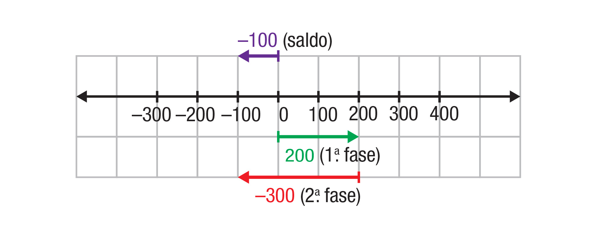
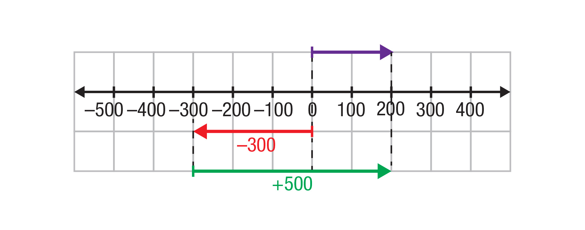
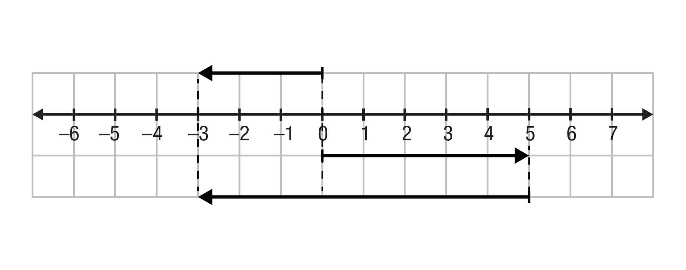
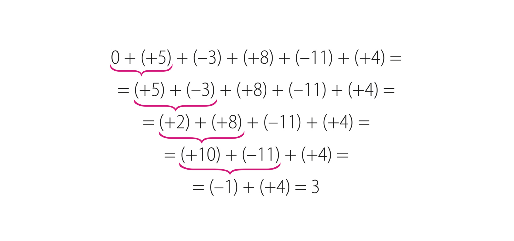
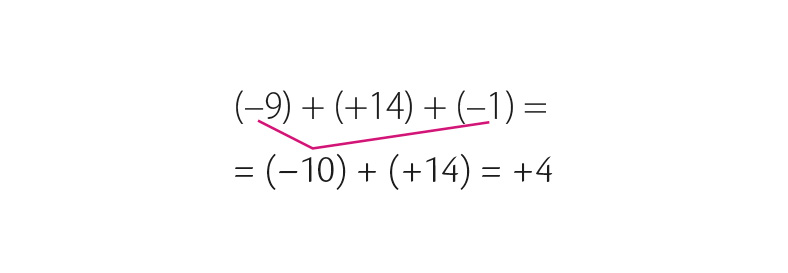
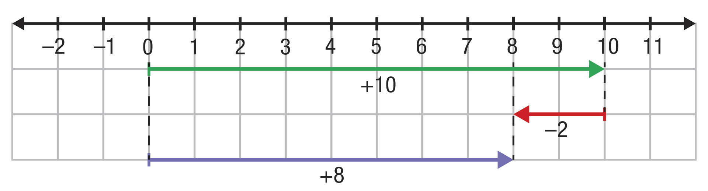
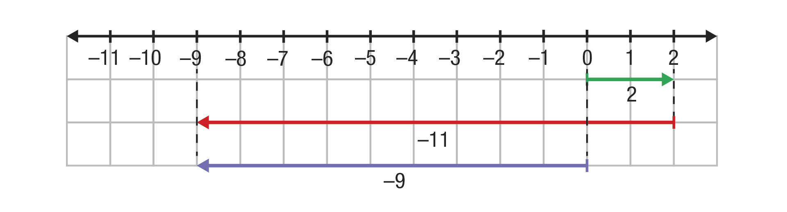

Unidade 03
Operações com números inteiros – parte I
Uma lesma estava no fundo de um poço, que tem 15 metros de profundidade. Seu objetivo era chegar ao topo dele. Para isso, durante o dia, com muito esforço, ela subiu 4 metros. Quando adormeceu no decorrer da noite, ela escorregou 3
metros.
Marcos Guilherme. 2017. Digital.
Desconsiderando qualquer imprevisto e supondo que a lesma manteve o mesmo ritmo, quantos dias ela levou para alcançar o topo desse poço?
Introdução
Imagine a situação e faça uma estimativa.
Agora, leia novamente o problema e discuta com seus colegas quais estratégias vocês podem usar para solucioná-lo.
Resolva o problema e explique como você encontrou a resposta.
Objetivos
Ao final deste capítulo, você deverá ser capaz de realizar cálculos de adição e subtração de números inteiros, bem como resolver problemas envolvendo essas operações.
Adição de números inteiros
Júlia e Eduardo estão na última rodada de um game de corrida de carros. Acompanhe como foi o desempenho de cada um nesse jogo.
Júlia começou ganhando 100 pontos na primeira fase e conquistou outros 300 pontos na segunda. Podemos representar essa situação com uma adição de números naturais:
100 + 300 = 400
Ou por meio de uma adição de números inteiros:
Ou, ainda, podemos representar as pontuações na reta numérica. Os pontos ganhos podem ser indicados no sentido positivo; os perdidos, no sentido negativo.
Veja como obter o saldo de pontos de Júlia usando a reta numérica:
A partir do ponto de origem (zero), deslocamos 100 unidades no sentido positivo, referente aos pontos obtidos na primeira fase.
Em seguida, a partir desse ponto, fazemos outro deslocamento de 300 unidades no sentido positivo, correspondente aos pontos ganhos na segunda fase.
O número inteiro associado ao ponto final desses deslocamentos indica o saldo de pontos feitos por Júlia.
Como ela ganhou pontos nas duas fases, seu saldo de pontos é positivo.
Agora, analisando as jogadas de Eduardo, notamos que ele ganhou 200 pontos na primeira fase e perdeu 300 pontos na segunda, porque girou na pista.
Observe como ficam as pontuações na reta numérica:

A partir de zero, representamos 200 unidades no sentido positivo, referente aos pontos ganhos da primeira fase.
Em seguida, a partir de 200, deslocam-se 300 unidades, agora no sentido negativo, pois correspondem aos pontos perdidos na segunda fase.
O número associado ao ponto final indica o saldo de pontos de Eduardo.
Como ele perdeu mais pontos do que ganhou, seu saldo de pontos ao final da segunda fase é negativo.
A pontuação total dele nessas duas fases pode ser indicada por:
a) Na segunda rodada, Júlia começou a primeira fase perdendo 300 pontos e se recuperou ganhando 500 pontos na segunda fase. Represente os pontos dessa rodada com uma adição de números inteiros.

E por meio da adição de inteiros:
b) Eduardo, na segunda rodada, começou per- dendo 200 pontos, depois se envolveu em um acidente e perdeu outros 400 pontos. Represente os pontos dessa rodada e o sal- do na reta numérica.
E por meio da adição de inteiros:
Como Eduardo perdeu pontos nas duas fases da rodada, seu saldo ficou negativo.
c) De acordo com as pontuações feitas por eles, represente na reta numérica, e com uma adição, o saldo nessas duas rodadas de
Júlia:
Eduardo:
Atividades
O termômetro indica a tem- peratura mínima registrada em certa manhã, em uma cidade canadense. Escreva uma adição de números inteiros para repre- sentar cada situação e respon- da às questões.
a) Se a temperatura subir 17 °C, quanto atingirá?
b) Se a temperatura subir somente 10 °C, quanto atingirá?
c) Se a temperatura baixar 2 °C, quanto atingirá?
d) Quantos graus a temperatura deve subir para atingir 0 °C?
Utilize a reta numérica para resolver as opera- ções em cada item. Lembre-se de que o ponto de partida é a origem.
a) (+5) + (–8) =

b) (+9) + (–6) =
c) (+3) + (–3) =
d) (–4) + (–2) =
Escreva uma situação-problema para ilustrar cada item da atividade anterior, de modo que a solução corresponda à apresentada na atividade 2.
Escreva a operação matemática que representa cada situação a seguir e, depois, calcule os resultados.
a) Ganhei 50 pontos e perdi 80. Qual é o meu saldo?
b) Emprestei 28 reais da minha mãe e 20 reais do meu pai. Qual é o total da minha dívida?
c) Perdi 120 pontos e depois perdi outros 40 pontos. Qual é o meu saldo?
d) Ganhei 40 reais e gastei 16 reais. Meu saldo ficou positivo ou negativo?
Usando números inteiros, registre a operação representada em cada reta numérica.
a)
b)
c)
Gustavo e sua mãe estavam no andar térreo. Pegaram o elevador e Gustavo apertou o número do andar onde moram.
a) Considerando que o zero indica o andar térreo, o que indicam os botões –3, –2 e –1 deste edifício?
b) Mais tarde, saíram de seu apartamento, desceram 7 andares até a garagem, depois subiram outros 11 andares até o apartamento do primo de Gustavo. Em qual andar esse primo mora?
c) No dia seguinte, a mãe de Gustavo saiu de seu apartamento, subiu 3 andares para buscar uma amiga e irem ao mercado. Em seguida, as duas desceram 10 andares para pegar o carro. Em que
andar o carro está?
Usando a reta numérica, efetue estas adições.
a) (+14) + (+7) = _______________
b) (+26) + (–8) = _______________
c) (+10) + (–17) = _______________
d) (–8) + (+6) = _______________
e) (–51) + (–9) = _______________
f) (–36) + (+14) = _______________
g) (+64) + (–32) = _______________
h) (–17) + (–17) = _______________
i) (–40) + (+40) = _______________
j) (+101) + (–200) = _______________
Em cada item, escreva os pares de números que satisfaçam as indicações.
a) Dois números naturais cuja soma seja 9.
b) Dois números inteiros cuja soma seja –9.
Marcelo é dono de uma sorveteria e fez esta tabela para organizar os dados sobre o faturamento (quanto recebeu), os gastos (quanto pagou) e o saldo (diferença entre faturamento e gastos) para os seguintes meses:
Mês
Faturamento (R$)
Gastos (R$)
Saldo (R$)
Abril
25 632
15 375
Maio
24 490
15 689
Junho
10 623
14 328
a) Complete a tabela escrevendo o saldo de cada mês.
b) Após essas movimentações, o saldo desse trimestre foi positivo ou negativo? De quanto?
Adição com mais de duas parcelas
Vinícius é síndico e, certo dia, precisava falar com vários condôminos. Ele estava no térreo, conversando com o porteiro. Depois, pegou o elevador até o 5o. andar, falou com o João; desceu 3 andares e falou com a Clara. Pegou o
elevador novamente, subiu 8 andares, conversou com a Célia. Em seguida, desceu outros 11 andares para buscar um documento e, por fim, subiu 4 andares até o andar de seu apartamento.
a) Qual número inteiro podemos usar para representar o andar térreo?
b) Em qual andar está o apartamento de Vinícius?
Essa situação poderia ser resolvida por meio da adição de várias parcelas, sendo positivas as que representam subidas e negativas as que representam
descidas.
0 + (+5) + (–3) + (+8) + (–11) + (+4)
Para resolvê-la, podemos usar várias estratégias, entre elas, fazer primeiramente a adição dos números positivos:
(+5) + (+8) + (+4) = +17
Em seguida, a adição dos negativos:
(-3) + (-11) = -14
E, depois, efetuar a adição desses resultados:
(+17) + (-14) = 3
Outra estratégia é efetuar as operações na ordem em que aparecem. Você pode resolvê-las pensando na reta numérica:

Note que, ao adicionar 5 a 0, obteve-se o próprio 5.
Na adição de números naturais, o zero é o elemento neutro. Essa propriedade também é válida para os números inteiros, pois somando zero a qualquer número inteiro, obtém-se o próprio número.
Exemplos:
0 + (+7) = +7 ou (+7) + 0 = +7
0 + (–9) = –9 ou (–9) + 0 = –9
Educação financeira
Você sabe qual é a diferença entre conta-corrente e conta-poupança?
Conta-corrente: é utilizada para movimentações de dinheiro, as quais são realizadas por meio de depósitos, recebimento de salário, saques, pagamentos de cheques, transferências para outras contas e pagamentos diversos.
Quando a conta-corrente tem um limite, significa que já há um crédito pré-aprovado pelo banco, também conhecido como cheque especial. Ele é usado quando gastamos mais do que temos como saldo na conta. Quando isso acontece, o saldo fica
negativo e, sobre ele, são cobrados taxas e juros.
Conta-poupança: também conhecida como caderneta de poupança, é um dos investimentos mais tradicionais do país, apesar do baixo rendimento. É possível fazer a aplicação de pequenos ou grandes valores. Nela, o dinheiro
fica guardado para render juros e correção monetária, que são acrescentados a cada 30 dias. Há contas-poupança que são vinculadas a uma conta-corrente.
Carol tem uma conta-corrente em um banco com limite de crédito de R$ 800,00. Ela tirou este extrato de sua conta-corrente:
a) Troque ideias com um colega sobre o que significam os termos destacados no extrato. Depois, pesquisem e registrem o significado de cada termo.
b) Qual é o saldo de Carol após essas movimentações? Registre o saldo final do extrato no dia 16/04.
c) De acordo com essas movimentações, calculando o saldo a cada dia, verifique se Carol ficou com saldo negativo em sua conta em algum dia dessa semana. Explique sua resposta.
Atividades
Acompanhe, no gráfico, o saldo da balança comercial brasileira em bilhões de dólares nos últimos anos. Lembre-se de que o valor referente às exportações significa entrada de dinheiro no país. Já as importações correspondem ao valor
utilizado para pagar o que foi comprado fora do país.
Fonte: <http://www.mdic.gov.br/noticias/2194-balanca-bate-recorde-em-2016-com-superavit-de-us-47-7-bilhoes>. Acesso em: 9 mar. 2017.
a) O que significa “balança comercial”? E “superávit”?
b) Em que ano o saldo da balança comercial foi menor e o que isso significa?
c) Como representar o saldo de 2013 com algarismo e palavras? E somente com algarismos?
d) De quanto é a diferença entre o maior e o menor saldo?
e) Em que ano o saldo da balança comercial atingiu um valor mais próximo de zero?
Calcule as somas usando a estratégia que julgar mais conveniente.
a) (+9) + (+18) + (–15)
b) (–1) + (+67) + (–13)
c) (+50) + 0 + (–12) + (–16) + (+10)
d) (+20) + (–100) + (+37) + (–40)
e) (–78) + (+8) + (–2) + (–25)
f) (–117) + (–12) + (+5) + (+4)
g) (–24) + (+150) + (–7) + (+6) + (–29) + (+55)
h) (–170) + (–21) + (–35) + (–124) + (–18)
Estes são os extratos bancários ou demonstrativos das movimentações realizadas nas contas-correntes de dois amigos.
a) Ao verificar o extrato, Juliano fez um depósito para zerar seu saldo. Quantos reais ele depositou?
b) Roberto quis deixar um saldo positivo de 180 reais em sua conta. Quantos reais ele precisou depositar?
c) Roberto pagou uma conta de 125 reais. Qual é o seu saldo após essa movimentação?
Propriedades da adição
Podemos utilizar as propriedades para nos auxiliar na resolução e facilitar os cálculos. Anteriormente, vimos que o zero é o elemento neutro na adição de números inteiros. Agora, vamos estudar outras três propriedades.
Quanto é:
(+18) + (–25)?
(–25) + (+18)?
A ordem das parcelas não altera a soma. Essa propriedade é a comutativa.
Observe essas duas estratégias de resolução:
ou

Como foi realizada cada uma das resoluções?
Associando de maneira diferente as parcelas, a soma não muda. Essa é a propriedade associativa.
Vamos somar números opostos ou simétricos:
(–16) + (+16) =
(+24) + (–24) =
Quando adicionamos dois números inteiros opostos, o resultado é zero. Essa é a propriedade da existência do elemento oposto.
Atividades
Em cada item, determine mentalmente e registre as somas.
a) (–34) + 0 = _______________
b) 0 + (–58) = _______________
c) (–12) + (+15) + (+5) + (–8) = _______________
d) (–76) + (+76) = _______________
e) (–40) + (+27) + (+3) + (–10) = _______________
f) (+43) + (–9) + (–1) = _______________
g) (+6) + (–10) = _______________
h) (–10) + (+6) = _______________
i) (–81) + (+7) + (+3) + (–9) = _______________
j) (+52) + (–52) = _______________
Complete a tabela com o que falta em cada linha.
Número
Oposto do número
Soma do número com seu oposto
+8
-19
0
-55
+82
Analise e explique como cada sequência é formada. Depois, complete com os dois próximos termos.
a) –3, –2, –1, 0, ...
b) –5, 0, 5, ...
c) –42, –35, –28, ...
d) –56, –48, –40, ...
Agora, responda: essas sequências são crescentes ou decrescentes?
Construa uma sequência com números inteiros. Solicite a um colega que descubra o critério utilizado e complete com os dois próximos termos.
Letícia e Pedro se divertem em um jogo de dados com estas regras:
os 3 dados são lançados valendo os pontos da face superior;
os dados pretos indicam números negativos, e o branco indica os positivos;
a cada jogada, somam-se os pontos obtidos nos 3 dados.
a) Escreva uma operação para determinar o número de pontos obtidos por ela e responda: Quantos pontos Letícia obteve?
b) Nas jogadas seguintes, Pedro obteve a maior pontuação possível nesse jogo; Letícia, a menor. Desenhe os dados obtidos por eles nessas jogadas e responda: Quantos pontos cada um fez?
c) Na sequência, Pedro jogou os três dados e obteve –5 pontos. Quais números ele pode ter obtido em cada dado, sabendo que dois deles eram opostos?
Subtração de números inteiros
Vamos analisar algumas situações envolvendo a diferença de números inteiros.
Esta é a previsão do tempo para certo dia na cidade de Roma, na Itália.
a) Com base nessas temperaturas, qual será a amplitude térmica nesse dia?
amplitude térmica: é a variação de temperatura, ou seja, a diferença entre a temperatura máxima e a mínima registradas em determinado período de tempo.
Para determinar a variação entre essas temperaturas, podemos pensar qual é número que, somado com 2, resulta em 10, ou seja, (+2) + ____ = +10. Em situações assim, podemos usar a operação inversa.
Para efetuar o cálculo, fazemos (+10) – $$\(+2)↙{\text"oposto de" +2}$$ = (+10) + (–2) = 8
Você pode perceber aqui que subtrair +2 é o mesmo que somar –2.
Observe como podemos representar essa situação na reta numérica:

Outra forma de efetuar (+10) – (+2) é pensar no oposto de +2 e eliminar os parênteses:
(+10) – (+2) = +10 – 2 = 8
A variação de temperatura em Roma, prevista nesse dia, será de 8 °C.
Agora, considere outra situação, envolvendo as temperaturas em Moscou, na Rússia.
Ao meio-dia, a temperatura era de +2 °C. Sabe-se que das 5 h da manhã até às 12 h, ela subiu 11 °C, então, qual era a temperatura às 5 h da manhã?
Para determinar a temperatura registrada logo cedo, podemos pensar em uma subtração e, para resolvê-la, podemos fazer a adição do primeiro número pelo oposto do segundo. Assim:
Observe a localização dos pontos correspondentes a essas temperaturas na reta numérica.

Se eliminarmos os parênteses, temos:
(+2) – (+11) = +2 –11 = –9
Assim, a temperatura às 5 horas da manhã era de –9 °C.
Nesta outra situação, temos os resultados de alguns times do Campeonato Alemão de futebol até a 21ª. rodada:
Classificação
P
J
V
E
D
GP
GC
SG
P pontos
J jogos
V vitórias
E empates
D derrotas
GP gols pró
GC gols contra
SG saldo de gols
1º. Bayern de Munique
49
20
15
5
1
45
12
33
7º. Colônia
32
20
8
8
4
29
18
11
12º. Mainz
25
20
7
4
9
29
35
-6
15º. Hamburgo
19
20
5
4
11
19
35
-16
Fonte: <http://globoesporte.globo.com/futebol/futebol-internacional/futebol-alemao/>. Acesso em: 3 mar. 2017
Considerando apenas o saldo de gols de cada time, calcule qual é a diferença entre o saldo de gols do:
a) Bayern de Munique e do Colônia. Lembre-se de que subtrair +11 é o mesmo que somar –11.
Podemos representar essa situação por:
Assim, a diferença entre o saldo de gols dos times Bayern de Munique e Colônia é de _______________ gols.
b) Colônia e do Mainz. Lembre-se de que subtrair –6 é o mesmo que somar +6.
Podemos representar essa situação por:
Assim, a diferença entre o saldo de gols dos times Colônia e Mainz é de _______________ gols.
c) Mainz e do Hamburgo. Lembre-se de que subtrair –16 é o mesmo que somar +16.
Podemos representar essa situação por:
Assim, a diferença entre o saldo de gols desses times é de _______________ gols.
Ao efetuar a subtração entre dois números inteiros, estamos determinando a diferença entre eles. A subtração de dois números inteiros equivale a adicionar o primeiro ao oposto do segundo.
Considere a seguinte subtração: (–8) – (–3).
(–8) – (–3) = –8 + (+3) = –8 + 3 = –5
Veja a representação desta situação na reta numérica ao lado.
Atividades
Na mesma época do ano, há dois contrastes: um dia de verão no Rio de Janeiro, com temperatura aproximada de 40 °C, e um dia de inverno em Berlim, na Alemanha, com temperatura aproximada de –2 °C.
Imagine que uma pessoa tenha viajado de Berlim para o Rio de Janeiro nessa época do ano. Qual foi a variação de termperatura que ela sofreu?
Resolva mentalmente as seguintes subtrações.
a) (+27) – (+8) = _______________
b) (+200) – (–50) = _______________
c) (–7) – (+3) = _______________
d) (+48) – (+36) = _______________
e) (–67) – (–13) = _______________
f) (+31) – (+40) = _______________
g) (–8) – (–8) – (–2) = _______________
h) (+1) – (+21) – (–20) = _______________
i) (+91) – (–9) – (–12) = _______________
j) (–17) – (–17) – (–17) = _______________
A tabela mostra as exportações, as importações e o saldo da balança comercial de um país durante o primeiro trimestre do ano. Os valores estão em milhões de dólares.
Complete a tabela com os valores que estão faltando.
Meses
Exportações
Importações
Saldo da balança comercial
Janeiro
1 680
1 500
Fevereiro
1 850
1 930
Março
1 580
–102
Transforme as subtrações em adições e determine cada resultado.
a) (+4) – (–1) = _______________
b) (+4) – (+2) = _______________
c) (–3) – (–2) = _______________
d) (–7) – (+3) = _______________
A ilustração ao lado apresenta a caricatura de Pitágoras, grande matemático e filósofo grego. Se ele nasceu em 585 a.C. e morreu em 500 a.C., quantos anos viveu?
O ano do nascimento de Cristo é considerado como ano I, marcando, assim, uma linha divisória no tempo. Para designar os anos anteriores a esse nascimento, utiliza-se a.C. e, para os anos que vêm depois, d.C. Quando nos referimos a
datas depois do nascimento de Cristo, não precisamos, necessariamente, utilizar d.C. Para calcular, use o sinal negativo para antes de Cristo, imagine os anos indicados em uma reta numérica e monte uma operação.
Matemática em detalhes
Você estudou as propriedades da adição de números inteiros: comutativa, associativa, elemento neutro e elemento oposto.
Será que essas mesmas propriedades são válidas na subtração de inteiros também?
Para responder a essa pergunta, vamos analisar alguns exemplos.
Propriedade comutativa
a) (+60) – (+15) =(+60) + (–15) = +60 – 15 = 45
b) (+15) – (+60) = (+15) + (–60) = +15 – 60 = –45
Note que, ao trocarmos a ordem dos números, a diferença foi alterada, portanto, a propriedade comutativa não é válida na subtração de números inteiros.
Perceba que, ao associarmos os termos de maneira diferente, os resultados não foram os mesmos. Portanto, a propriedade associativa não é válida na subtração de números inteiros.
Observe que o zero não é o elemento neutro da subtração.
Como não há elemento neutro, não podemos mencionar a existência do elemento oposto como propriedade da subtração.
Portanto, as propriedades da adição de números inteiros não são válidas na subtração de números inteiros.
Adição algébrica
Leia estas informações sobre alguns dos pontos mais altos e mais baixos do planeta.
O Monte Kilimanjaro é um dos maiores picos do mundo, atingindo cerca de 5 149 m de altitude. Está localizado no nordeste da Tanzânia, na fronteira com o Quênia, na África.
Mar Morto. Disponível em: <http://escola.britannica.com.br/levels/fundamental/article/mar-Morto/481119>. Acesso em: 29 jun. 2017.
Mar Morto
O Mar Morto, que na verdade é um lago, recebe esse nome por causa de sua salinidade, que é de 33% (10 vezes mais que a dos oceanos), o que impediria qualquer tipo de vida e faz com que os banhistas boiem com facilidade. Com uma área de
650 km², tem a menor altitude do planeta, pois fica aproximadamente a 400 metros abaixo do nível do mar, porém esse número está diminuindo a cada ano por causa da baixa vazão do rio Jordão e da extração de minerais.
Escreva uma expressão numérica para determinar a diferença entre as altitudes do Monte Kilimanjaro e do Mar Morto, em seguida, resolva-a.
Qualquer subtração de números inteiros equivale a uma adição do primeiro número com o oposto do segundo número. Assim, dizemos que a adição e a subtração de números inteiros podem ser consideradas como uma única operação, chamada
adição algébrica, cujo resultado é a soma algébrica.
Matemática em detalhes
Vamos calcular a soma algébrica de algumas expressões numéricas.
(–26) + (–19) – (+80) – (–12) + (+8)
Para simplificar a escrita, podemos eliminar os parênteses, lembrando que somar –19 é o mesmo que subtrair 19 e que subtrair –12 é o mesmo que somar o oposto de –12, ou seja, +12.
Portanto, aplicando esses conhecimentos na expressão, ficamos com:
Em seguida, podemos juntar os números negativos e, depois, os positivos e obter a soma algébrica:
Note que, na adição algébrica de números inteiros com sinais diferentes, a soma algébrica tem o sinal do número com maior módulo. Veja que o resultado –105 tem o sinal de –125.
Ou, ainda, após eliminar os parênteses, podemos resolver as operações na ordem em que aparecem:
Note que a soma algébrica resultante é a mesma em relação à obtida por meio da resolução anterior.
–15 + (–9 +13)
Podemos resolvê-la de duas maneiras.
1.ª) Eliminando os parênteses, juntando os positivos e negativos e calculando a soma algébrica:
2.ª) Podemos efetuar, primeiramente, o que está no interior dos parênteses e, depois, juntar ao –15:
–50 – (–15 – 14 + 15)
Acompanhe duas formas de resolução.
1.ª) O sinal negativo à frente dos parênteses significa o oposto de todos os números que estão dentro deles. Para eliminá-los, fazemos:
–(–15) = +15
–(–14) = +14
–(+15) = –15
Portanto:
–50 – (–15 – 14 + 15) =
= –50 + 15 + 14 – 15 =
Juntando os negativos, depois os positivos e calculando a soma algébrica, obtemos:
2.ª) Nessa expressão, podemos notar que no interior dos parênteses há dois números opostos:
–15 e + 15. Já vimos que (–15) + (+15) = 0
Logo, eliminando os números opostos:
Atividades
Calcule mentalmente e registre os resultados.
a) (+5) – (+16) = _______________
b) 5 – (–23) = _______________
c) 32 + (+9) = _______________
d) (–21– 4) – (–25) = _______________
e) 38 – (–14) = _______________
f) 13 – (+7 + 6) = _______________
g) –(–19 + 38) = _______________
h) –(+80 – 45 – 15) = _______________
i) –(12 – 112) + 1 = _______________
Como você viu na página 24, o Monte Everest é o maior do mundo, com 8 848 m de altitude. Ele faz parte de uma cadeia de montanhas na fronteira do Nepal com a China.
Altitude: altura em relação ao nível do mar. A altitude se refere à medida obtida a partir do nível do mar. Para cima, tem-se altitude positiva e, para baixo, altitude negativa.
Altura: dimensão vertical de um corpo, da base para cima. Profundidade: distância vertical em relação ao volume entre as bordas e o fundo de um objeto.
O lugar mais profundo dos oceanos é a Fossa das Marianas, com 10 911 m. Ela está localizada no Oceano Pacífico, conforme mostra o mapa.
FOSSA DAS MARIANAS
Talita Kathy Bora
Fonte: IBGE. Atlas geográfico escolar. 7. ed. Rio de Janeiro, 2016. Adaptação.
a) Usando números inteiros, escreva uma operação para determinar a diferença entre a altitude do Monte Everest e da Fossa das Marianas.
b) Resolva essa operação.
Estes são quadrados mágicos. Neles, a soma dos números em cada linha, coluna ou diagonal é sempre a mesma. Descubra qual é a soma e complete as demais colunas e linhas desses quadrados mágicos.
a)
b)
Complete as lacunas com um dos sinais = (igual) ou ≠ (diferente), de modo que as sentenças sejam verdadeiras.
a) –(8 + 7) ___________ –8 + 7
b) –(–9 + 4) ___________ 9 – 4
c) –(+1 + 6) ___________ –1 + 6
d) –(–2 – 5) ___________ + 2 + 5
Você se lembra do sucessor e do antecessor de números naturais? O sucessor de 7 é o número 8, pois 8 tem uma unidade a mais do que o 7. O antecessor de 10 é o número 9, pois tem uma unidade a menos do que o 10. Esse raciocínio
também é válido para os números inteiros. Com base nisso e imaginando os números na reta numérica, complete a tabela.
Antecessor
Número
Sucessor
12
1
0
-4
-37
Resolva estas adições algébricas:
a) –18 + 90 – 45 –10 + 36
b) –59 + 27 – 16 –1 + 8
c) –(–35 + 83 – 17 – 4)
d) –(+1 –12 + 0 +19 + 56)
e) –6 – (–14 + 24 – 75 – 24)
f) 57 – (–6 + 34 + 20 – 9)
g) –20 + 6 – 3 + 4 + 20
h) –144 + 38 – 2 + 12
i) +90 + 10 – 3 – 7 – 80
j) +63 – 17 – 4 + 1 + 17
k) –130 + 18 – 20 + 2
l) –29 + 14 – 3 + 6 + 50
Atualmente, as pessoas consultam o extrato bancário pelo computador. Observe o extrato desta cliente.
a) Devido a um problema de configuração, os valores do cartão de crédito e do saldo disponível não apareceram. Calcule esses valores e registre no extrato.
b) Elabore um problema, podendo retirar ou acrescentar dados do extrato, que utilize a adição ou a subtração de números inteiros em sua solução e passe para um colega resolver.
Organize as ideias
Neste capítulo, estudamos as operações de adição e subtração com números inteiros. Nas frases a seguir, estão presentes alguns dos principais conceitos envolvidos nesse assunto. Complete as lacunas escolhendo a opção correta entre as
apresentadas nos parênteses.
A soma de dois números positivos é um número _______________ . (positivo / negativo)
A soma de dois números negativos é um número _______________ . (positivo / negativo)
A soma de +10 com –7 é um número _______________ . (positivo / negativo)
Na adição de números inteiros com sinais diferentes, a soma terá o sinal do número com _______________ módulo. (menor / maior)
A soma de dois números inteiros _______________ é igual a 0. (iguais / opostos)
Subtrair dois números inteiros é o mesmo que adicionar o _______________ ao oposto do _______________ . (primeiro / segundo)
Complete o quadro explicando as propriedades da adição de números inteiros ou escrevendo exemplos.
Comutativa
(+6) + (–4) = 2
(–4) + (+6) = 2
Associativa
Podemos associar as parcelas de maneiras diferentes e o resultado não se altera.
Elemento neutro
Ao adicionar um número inteiro com o zero, a soma é igual ao próprio número.